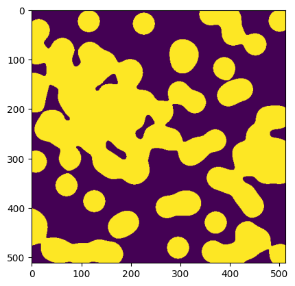
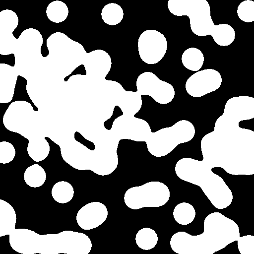
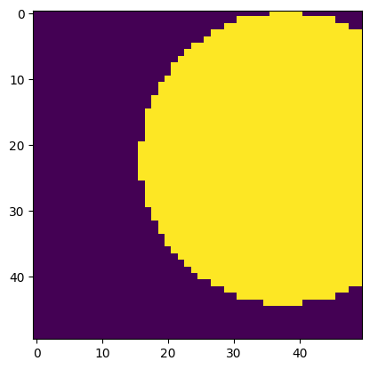
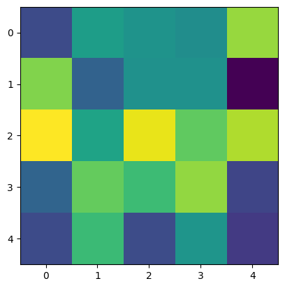

10 minutes to Tiled#
This is a short, tutorial-style introduction to Tiled, for new users.
Connect#
To begin, we will use a public demo instance of Tiled. If you are reading this tutorial without an Internet connection, see the section below on running your own Tiled server on your laptop.
This tutorial focuses on accessing Tiled from Python. But you can also interact with Tiled from your web browser by navigating to https://tiled-demo.nsls2.bnl.gov where you’ll find a web-based user interface and more.
from tiled.client import from_uri
c = from_uri("https://tiled-demo.nsls2.bnl.gov")
Note
At this point, some Tiled servers might prompt you to log in with a username and password. But the demo we are using here is configured to allow public, anonymous access.
Search on metadata#
Every entry in Tiled has metadata, which we can access via the metadata
attribute. Tiled does not enforce any constraints on this by default: the
metadata may be any key–value pairs. In technical terms, it accepts arbitrary
JSON.
c['examples/xraydb'].metadata
{'description': 'X-ray reference data for the elements, sourced from XrayDB '
'(https://github.com/xraypy/XrayDB). Includes mass attenuation '
'coefficients, emission lines, and absorption edges.',
'energy_units': 'eV',
'mu_units': 'cm^2/g',
'source': 'xraydb',
'version': '9.2'}
Let’s take a peek at the first entry to get a sense of what we might search for in this container.
x = c['examples/xraydb']
x.values().first().metadata
{'edges': {'K': {'energy_eV': 13.6,
'fluorescence_yield': 0.0,
'jump_ratio': 1.0}},
'element': {'atomic_number': 1,
'category': 'nonmetal',
'density_g_cm3': 0.0001,
'molar_mass': 1.0078,
'name': 'hydrogen',
'period': 1,
'symbol': 'H'}}
Tiled supports many types of queries; in the following simple example, we’ll search the Tiled catalog for nodes whose metadata contains a given key–value pair.
from tiled.queries import Key
x.search(Key('element.category') == 'nonmetal')
<Container {'H', 'C', 'N', 'O', 'P', 'S', 'Se'}>
Queries can be chained to progressively narrow results. For numerical parameters, querying over a given range could also be useful.
x.search(
Key('element.category') == 'nonmetal'
).search(
Key('element.atomic_number') < 16
)
<Container {'H', 'C', 'N', 'O', 'P'}>
What other values does element.category take? We could answer that question
by downloading all the entries and tabulating them in Python, but it’s faster
to ask Tiled to do this and just send the answer.
x.distinct('element.category', counts=True)['metadata']
{'element.category': [{'value': None, 'count': 0},
{'value': 'alkaline_earth', 'count': 6},
{'value': 'alkali_metal', 'count': 6},
{'value': 'post_transition_metal', 'count': 8},
{'value': 'transition_metal', 'count': 29},
{'value': 'actinide', 'count': 10},
{'value': 'nonmetal', 'count': 7},
{'value': 'metalloid', 'count': 6},
{'value': 'halogen', 'count': 5},
{'value': 'lanthanide', 'count': 15},
{'value': 'noble_gas', 'count': 6}]}
We can stash the results in a variable and access them in various ways.
results = x.search(Key('element.category') == 'noble_gas')
print(f"Noble gases in this data set: {list(results)}")
Noble gases in this data set: ['He', 'Ne', 'Ar', 'Kr', 'Xe', 'Rn']
We can efficiently access only the first result without downloading the metadata for all the results.
first_result = results.values().first()
first_result.metadata
{'edges': {'K': {'energy_eV': 24.6,
'fluorescence_yield': 0.0,
'jump_ratio': 1.0}},
'element': {'atomic_number': 2,
'category': 'noble_gas',
'density_g_cm3': 0.0002,
'molar_mass': 4.0026,
'name': 'helium',
'period': 1,
'symbol': 'He'}}
Tip
Try these:
results.keys().first()
results.keys().last()
results.keys()[2]
results.keys()[:3]
results.values().first()
results.values().last()
results.values()[2]
results.values()[:3]
for key, value in results.items():
print(f"~~ {key} ~~")
print(value.metadata)
Access as Scientific Python data structures#
Tiled can download data directly into scientific Python data structures, such as numpy, pandas, and xarray. This is how we encourage Python users to use Tiled for analysis. It has several advantages:
No need to name or organize files.
No need to write a copy to your local disk and then read it into your program. Instead, load the data straight from the network into your data analysis. (Disks are often the slowest things we deal with in computing.)
c['examples/xraydb/C/edges']
<DataFrameClient ['edge', 'energy_eV', 'fluorescence_yield', 'jump_ratio']>
c['examples/xraydb/C/edges'].read()
| edge | energy_eV | fluorescence_yield | jump_ratio | |
|---|---|---|---|---|
| 0 | K | 284.2 | 0.0014 | 19.02 |
| 1 | L1 | 18.0 | 0.0000 | 1.00 |
| 2 | L2 | 7.2 | 0.0000 | 1.00 |
| 3 | L3 | 7.2 | 0.0000 | 1.00 |
c['examples/images/binary_blobs']
<ArrayClient shape=(512, 512) chunks=((512,), (512,)) dtype=bool>
arr = c['examples/images/binary_blobs'].read()
arr
array([[False, False, False, ..., False, False, False],
[False, False, False, ..., False, False, False],
[False, False, False, ..., True, False, False],
...,
[False, False, False, ..., True, True, True],
[False, False, False, ..., True, True, True],
[False, False, False, ..., True, True, True]], shape=(512, 512))
%matplotlib inline
import matplotlib.pyplot as plt
plt.imshow(arr)
<matplotlib.image.AxesImage at 0x7f7e5293b050>

We’ll see shortly that you can also fetch just a slice of a dataset without downloading the whole thing.
Export to a preferred format#
In this section, we tell Tiled how we want the data, and it sends it to us in that format.
This works:
No matter what format the data is stored in
Even if that data isn’t even stored in a file at all (e.g., in a database or an S3-like blob store)
Let’s download the table of edges for carbon from the xraydb data.
# Download as Excel spreadsheet
c['examples/xraydb/C/edges'].export('my_table.xlsx')
# Or, download as CSV file
c['examples/xraydb/C/edges'].export('my_table.csv')
We can open the files here or in any other program. They are now just files on our local disk.
!cat my_table.csv
edge,energy_eV,fluorescence_yield,jump_ratio
K,284.2,0.0014,19.02
L1,18.0,0.0,1.0
L2,7.2,0.0,1.0
L3,7.2,0.0,1.0
Let’s download an image dataset as a PNG file.
c['examples/images/binary_blobs'].export('my_image.png')
Again, we can open the file here or in any other program.

Tiled tries to recognize the file format you want from the file extension, as
in my_file.png above. It can be also be specified explicitly using:
c['examples/images/binary_blobs'].export('my_image.png', format='image/png')
We can review the file formats.
c['examples/images/binary_blobs'].formats
['application/json',
'application/octet-stream',
'application/vnd.ms-excel',
'image/png',
'image/tiff',
'text/csv',
'text/html',
'text/plain',
'text/x-comma-separated-values']
Different data structures support different formats: arrays fit into different formats than tables do.
c['examples/xraydb/C/edges'].formats
['application/json',
'application/json-seq',
'application/vnd.apache.arrow.file',
'application/vnd.ms-excel',
'application/vnd.openxmlformats-officedocument.spreadsheetml.sheet',
'application/x-hdf5',
'application/x-parquet',
'text/csv',
'text/html',
'text/plain',
'text/x-comma-separated-values']
Tip
Tiled ships with support for a set of commonly-used formats, and server admins can add custom ones to meet their users’ particular requirements.
Slice remotely#
A major advantage of Tiled over traditional file transfer is the ability to download just the slice of a dataset you need, without downloading the entire thing. This is handy for both sophisticated applications and simple tasks like previewing whether a dataset is “the good one” before waiting for a full download. Think of Google Maps, fetching the data of interest on demand.
Standard numpy slicing syntax works, fetching only the data you request.
# Top-right corner
arr = c['examples/images/binary_blobs'][:50,-50:]
plt.imshow(arr)
<matplotlib.image.AxesImage at 0x7f7e5297ab40>

This works for exporting data to a file as well.
import numpy as np
c['examples/images/binary_blobs'].export(
'top_right_corner.png',
slice=np.s_[:50,-50:],
)
Tabular data is different than array data, so it slices differently. For tabular data, we can select the columns of interest.
c['examples/xraydb/C/edges']
<DataFrameClient ['edge', 'energy_eV', 'fluorescence_yield', 'jump_ratio']>
c['examples/xraydb/C/edges'].read(['edge', 'energy_eV'])
| edge | energy_eV | |
|---|---|---|
| 0 | K | 284.2 |
| 1 | L1 | 18.0 |
| 2 | L2 | 7.2 |
| 3 | L3 | 7.2 |
And this again works for exporting to a file.
c['examples/xraydb/C/edges'].export('my_table.csv', columns=['edge', 'energy_eV'])
Locate data sources (e.g., files)#
Once you have identified data sets of interest in the Tiled catalog, it’s easy to determine the physical location of the underlying data. You can then access them by any convenient means and download the entire original files, instead of using the export feature, if desired:
Direct filesystem access
File transfer via SFTP, Globus, etc.
File transfer via Tiled
Here we’ll see the file that backs the table of Carbon edges in our xraydb dataset.
from tiled.client.utils import get_asset_filepaths
get_asset_filepaths(c['examples/xraydb/C/edges'])
[PosixPath('/data/examples/xraydb/C/edges/partition-0.parquet')]
Tiled knows a whole lot more than just the file path. The snippet below
includes the format (mimetype) of the data, its structure, and other
machine-readable information that is necessary for applications to navigate the
file and load the data.
ds, = c['examples/xraydb/C/edges'].data_sources()
ds
DataSource(structure_family='table', structure={'arrow_schema': '', 'npartitions': 1, 'columns': ['edge', 'energy_eV', 'fluorescence_yield', 'jump_ratio'], 'resizable': False}, id=616, mimetype='application/x-parquet', parameters={}, properties={}, assets=[Asset(data_uri='file://localhost/data/examples/xraydb/C/edges/partition-0.parquet', is_directory=False, parameter='data_uris', num=0, id=396)], management='writable')
Now, the data may not be stored in a file at all. Tiled understands data stored in databases or S3-like blob stores as well, and these are becoming more common as data scales and moves into cloud environments.
The data location is always given as a URL. That URL begins with file:// if
it’s a plain old file or something else if it is not.
ds.assets[0].data_uri
'file://localhost/data/examples/xraydb/C/edges/partition-0.parquet'
Download raw files#
Sometimes it is best to just download the files exactly as they were. This may be the most convenient thing, or it may be necessary to comply with transparency requirements that mandate providing a byte-for-byte copy of the raw data.
As shown above, Tiled can provide the filepaths, and you can fetch the files by any available means. Tiled can also download the files directly. It does this efficiently by launching parallel downloads.
c['examples/xraydb/C/edges'].raw_export('downloads/')
[19:37:26] Requesting download.py:39 https://tiled-demo.nsls2.bnl.gov/api/v1/asset/bytes/examples/xraydb/C/edges?id=396
Downloaded downloads/partition-0.parquet download.py:64
[PosixPath('downloads/partition-0.parquet')]
Run a Tiled server#
Up to this point, we’ve been reading from Tiled’s public demo instance. To demonstrate writing data, we’ll need our own server because the public demo doesn’t allow us to write. (If you already have access to an institutional Tiled server that grants you write access, feel free to use that!) The simplest way to get started is to launch a local server with embedded storage and basic security:
from tiled.client import simple
c = simple()
Tiled version 0.0.1.dev2345+gc6ea09a2d
http://127.0.0.1:43021/api/v1?api_key=824bd04fbaa4393c
The server starts in the background (on a thread). You will see a URL printed when
it starts. Your URL will differ: each launch generates a unique secret
api_key. You can paste this URL into a browser to open Tiled’s web interface.
Tip
Just simple() uses temporary storage, which is convenient for
experimentation. For persistent storage, pass a directory like
simple('data/').
This embedded setup is convenient for personal use and small experiments but isn’t designed for production or multi-user deployments. For robust, scalable options, see the user guide.
Upload data#
We now have an empty Tiled server that we can write into.
ac = c.write_array([1, 2, 3])
ac.read()
array([1, 2, 3])
We can optionally include metadata and/or give it a name, a key.
(By default it gets a long random one.)
ac = c.write_array(
[1, 2, 3],
metadata={'color': 'blue'},
key='hello'
)
ac.metadata
{'color': 'blue'}
We can find it via search.
c.search(Key('color') == 'blue')
<Container {'hello'}>
Similarly, we can upload tabular data.
tc = c.write_table({'a': [1, 2, 3], 'b': [4, 5, 6]})
tc.read()
| a | b | |
|---|---|---|
| 0 | 1 | 4 |
| 1 | 2 | 5 |
| 2 | 3 | 6 |
We can organize items into nested containers.
c.create_container('x')
c['x'].write_array([1,2,3], key='a')
c['x'].write_array([4,5,6], key='b')
c['x']
<Container {'a', 'b'}>
Stream#
So far we’ve been pulling data from Tiled on demand. Streaming flips this around: Tiled pushes data to us as soon as it is written, which is useful when monitoring a live experiment or an instrument. The example below sets up callbacks that fire when a new entry is created in the Tiled catalog and when new data arrives.
# Collect references to active subscriptions. Otherwise, Python may
# garbage collect them, and they will never run.
subs = []
def on_child_created(update):
"Called when a new entry is created in the container"
print(f"New item named {update.key}")
child_sub = update.child().subscribe()
child_sub.new_data.add_callback(on_new_data)
child_sub.start_in_thread(start=0)
subs.append(child_sub) # Keep a reference.
def on_new_data(update):
"Called when new data is uploaded or registered for this entry"
print(f"New data: {update.data()}")
sub = c.subscribe()
sub.child_created.add_callback(on_child_created)
sub.start_in_thread()
<ContainerSubscription / >
import numpy as np
ac = c.write_array(np.array([1, 2, 3]))
# Extend the array.
ac.patch(np.array([4, 5, 6]), offset=3, extend=True)
ac.patch(np.array([7, 8, 9]), offset=6, extend=True)
# Wait for subscriptions to process.
import time; time.sleep(1)
New item named c11a2125-2889-46d5-b83f-862804123f05
New data: [1 2 3]
New data: [4 5 6]
New data: [7 8 9]
Tip
Under the hood, the pull-based methods (read, search, etc.) use HTTP REST
requests, while subscriptions use a WebSocket connection. This is why
subscriptions can receive data as it arrives rather than polling the server repeatedly.
Uploaded data is streamed via the WebSocket connection before it is even saved to disk, which minimizes latency.
Register data#
Detectors or analysis programs often write files directly to disk. Tiled can make those files accessible without any re-uploading or reformatting.
For security reasons, the server administrator must designate which directories data can be registered from, like so.
c = simple(readable_storage=['external_data'])
Tiled version 0.0.1.dev2345+gc6ea09a2d
http://127.0.0.1:41509/api/v1?api_key=6e6abcdfd380c5b3
We’ll make some example files to be registered with Tiled.
from pathlib import Path
import numpy as np
import pandas as pd
import tifffile
# Create directory.
dir = Path('external_data')
dir.mkdir(exist_ok=True)
# Write an image stack of TIFFs.
for i in range(10):
tifffile.imwrite(f'external_data/image_stack{i:03}.tiff', np.random.random((5, 5)))
# Write a table as a CSV.
df1 = pd.DataFrame({'a': [1, 2, 3], 'b': [4, 5, 6]})
df1.to_csv('external_data/table.csv')
print('Contents of external_data directory:')
print('\n'.join(sorted(p.name for p in dir.iterdir())))
Contents of external_data directory:
image_stack000.tiff
image_stack001.tiff
image_stack002.tiff
image_stack003.tiff
image_stack004.tiff
image_stack005.tiff
image_stack006.tiff
image_stack007.tiff
image_stack008.tiff
image_stack009.tiff
table.csv
We’ll register them.
from tiled.client.register import register
await register(c, 'external_data')
Tip
Note that the register function is asynchronous. In Jupyter or IPython,
we must use await register(...). In a Python script, call
asyncio.run(register(...)).
A commandline interface is also available. See tiled register --help for
more.
Tiled correctly consolidated the TIFFs into a single logical entry in the container.
from tiled.client import tree
tree(c)
├── image_stack
└── table
The file formats are considered a low-level detail. The file extensions are intentionally stripped off the names (though this is configurable). The user does not need to know the format to read the data!
c['table'].read()
| Unnamed: 0 | a | b | |
|---|---|---|---|
| 0 | 0 | 1 | 4 |
| 1 | 1 | 2 | 5 |
| 2 | 2 | 3 | 6 |
print(c['image_stack'])
plt.imshow(c['image_stack'][3])
<ArrayClient shape=(10, 5, 5) chunks=((1, 1, ..., 1), (5,), (5,)) dtype=float64>
<matplotlib.image.AxesImage at 0x7f7e0cb5aae0>

However, the storage details are available if wanted, via the data_sources()
method.
print(c['image_stack'].data_sources()[0].mimetype)
print(c['table'].data_sources()[0].mimetype)
multipart/related;type=image/tiff
text/csv
This concludes the whirlwind tour of Tiled’s core features using its Python client.